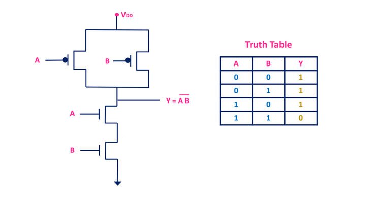

Answer: Cut-off (OFF) and Saturation (ON) regions
Answer:nMOS
Answer:Logic ‘0’
Answer:nMOS and pMOS
Answer:
CMOS logic consumes negligible static power because only leakage current flows
when the input is static, and there is no direct path from VDD to GND except during switching.
Answer:
MOSFETs have higher input impedance,
faster switching speed,
and consume less power compared to BJTs.
Answer:
When Vgs > Vth, the MOSFET turns ON and conducts like a closed switch.
When Vgs < Vth, it turns OFF and acts like an open switch.
Example: An nMOS passes GND when ON; a pMOS passes VDD when ON.
Answer:
Static CMOS consumes low static power; dynamic CMOS uses more due to clocking.
Dynamic CMOS is faster due to lower capacitance and fewer transistors.
Static CMOS is more robust and noise-tolerant; dynamic is prone to leakage and charge loss.
Answer:
Answer:
Working
When both inputs A = 1 and B = 1: Both nMOS conduct (PDN path complete), pMOS are OFF → Output = 0.
For all other combinations (A=0 or B=0): At least one pMOS conducts (PUN path active), at least one nMOS OFF → Output = 1.